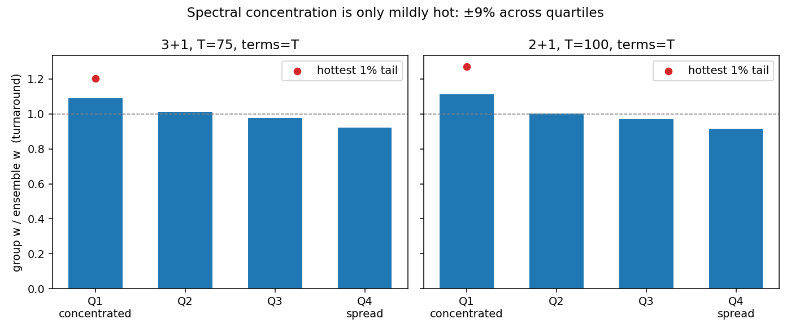
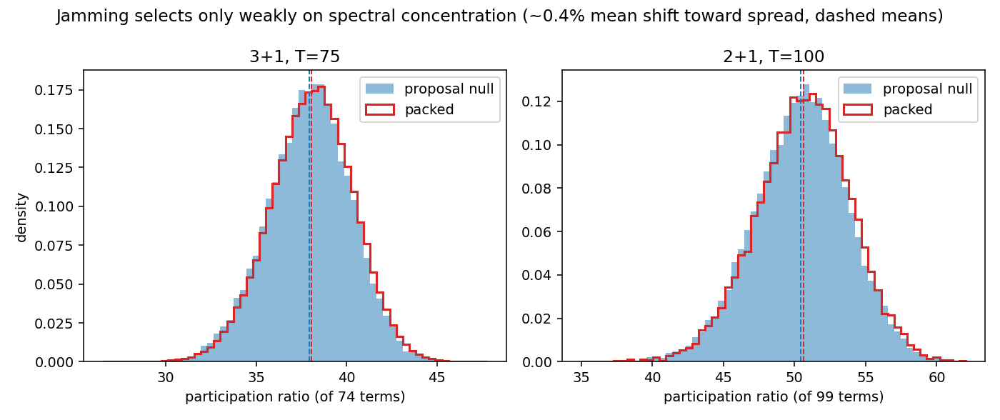
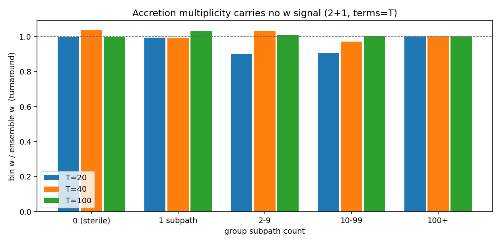
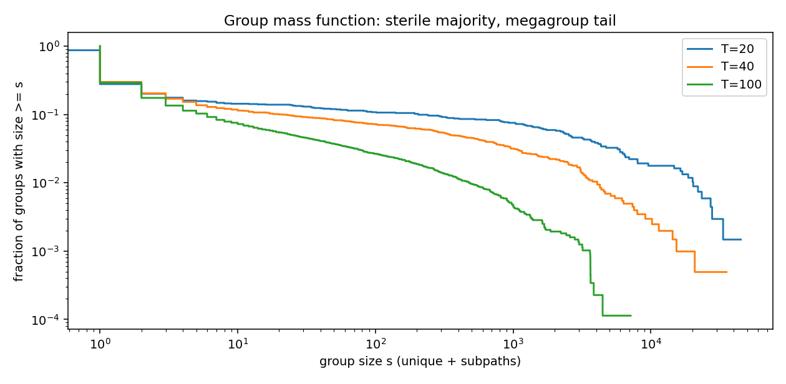
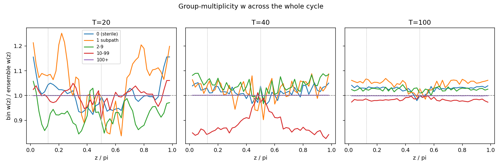
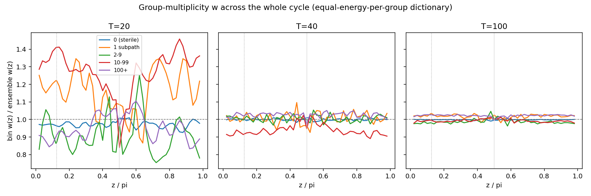
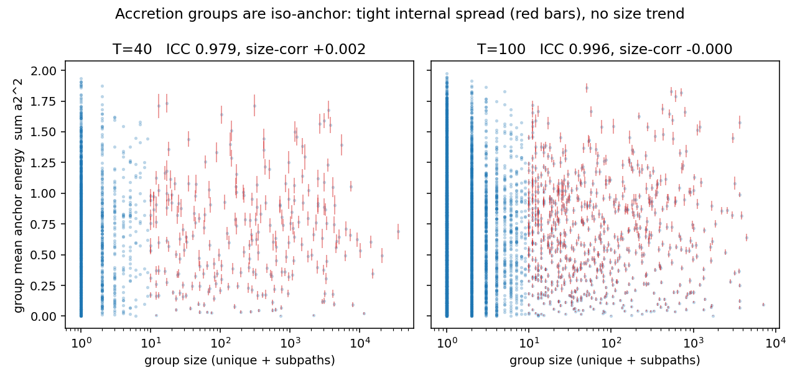

No emergent ν sector: spectral concentration is only mildly hot,
and the amplitude simplex self-averages it away
New analysis analysis/analyze_spectral_w.py (commit
87516b6),
run on the stored FULLSPEC dumps: 3+1 T=75 terms=T (177,848
worldlines) and 2+1 T=100 terms=T (8,744), 8 seeds each pooled.
No new packing runs — this is a re-analysis of existing
campaign data.
Question (raised by the two-fluid equation-of-state discussion): does
the full-spectrum model already contain an “effective
few-term” subpopulation? The amplitude split is random, so a
term drawn with negligible amplitude is as good as absent — if
such worldlines exist and run hot (higher w), the model would carry a
built-in neutrino-like relic sector with no new ingredient. The probe:
each worldline's participation ratio PR =
1/Σŝ² of its normalized |a·b| weights
(axis-averaged) — the effective number of terms actually
carrying rapidity budget. Split the pack into PR quartiles, measure
each group's turnaround w under the standard E ~ Σb dictionary.
Concentration is hot — directionally.
Group w falls monotonically from the most-concentrated to the
most-spread quartile in both dimensions: 1.09× →
0.92× the ensemble w in 3+1, 1.11× → 0.91×
in 2+1; the most-concentrated 1% runs 1.20× / 1.27×.
Mechanism: at the turnaround the comoving-offset velocity
vanishes, so v² is an incoherent sum over the wiggle
weights and concentrating them raises it.
But the simplex self-averages: there is no few-term
tail. Under the uniform Dirichlet(1,…,1)
amplitude split the effective term count concentrates at
≈T/2 ± 6%: at T=75 the packed PR spans 26.5–47.8
(median 38) over 177,848 worldlines — the single most
concentrated worldline in the whole campaign still spreads its
budget over ~27 effective terms. Near-zero amplitudes essentially
never happen. A genuine two-fluid w split (a sector at
w ≈ 0.15–0.3 against dust at d/(6T)) would need
PR ≈ 2–3, i.e. a factor ~40 in w — the measured
spread is ±9%.
Jamming barely notices spectra. The packed PR
distribution vs the proposal-ensemble null: shapes coincide, with
a tiny mean shift toward spread spectra — +0.14
terms of 38 in 3+1, +0.20 of 50 in 2+1 (~0.4%, but 8/8 seeds
high in both dims; seed-level t = 25 / 6). Jamming weakly culls
the hot concentrated worldlines — the spectral fingerprint
of the known jamming-cooling effect, and nothing more.

Turnaround w by spectral-concentration quartile (8 seeds pooled).
Concentrated worldlines are hotter — but the whole effect is
±9%, not the ×40 a relic sector needs.

Packed vs proposal PR distributions. Jamming selects on spectral
concentration only at the ~0.4% level, toward spread (cooler)
spectra.
Takeaway. This is the third “inertness” result in a row:
coupling strength (ν-sector run, 2026-08-02), admission epoch
(same), and now emergent spectral concentration all fail to give a
subpopulation its own equation of state — the dust law
w = d/(6T) really is ensemble-rigid, and a two-fluid w split
has to be an ingredient, not an emergent property: either an
explicit few-term second species (an out-of-model probe, like the
ν-sector mode) or a sparser amplitude prior (a model change).
Bonus consistency check: the pooled turnaround w on this data is
0.00663 (3+1) / 0.00338 (2+1) against d/(6T) = 0.00667 / 0.00333
— the dust law reconfirmed to half a percent on the stored
FULLSPEC campaigns.
Accretion multiplicity carries no w signal — but the group
mass function is violently heavy-tailed
New analysis analysis/analyze_subpath_groups.py (commit
5109525),
run on the stored FULLSUB dumps (2+1 full-spectrum terms=T with
phase-2 subpaths, campaign fullsub2d_e6): T = 20, 40,
100, 8 seeds each pooled via the dumps' gid group
column. Question from Chris: do unique groups with one subpath vs
many subpaths differ in their w contribution? (T = 5, 10 excluded:
those dumps hit a 60k-row cap and are truncated.)
Editor's note (later the same day): the T=20 dumps are also
partially truncated — 5 of 8 seeds sit at the 60k row cap,
discovered during the energy-dictionary follow-up below. T=20 group
counts and sizes in this entry and the π/8 addendum are therefore
censored (on the 3 complete seeds the sterile fraction is 68%, not
59%; the max group size 45,018 stands as a ≥ lower bound, since
dumped rows undercount a capped group). The w measurements are
unaffected in kind — they are statistics of the dumped paths
— and T=40/100 are complete. See the second addendum.
A group is one unique worldline plus everything that accreted onto
it in phase 2 (a subpath must touch exactly one existing group and
joins it; accepted subpaths seed further accretion). Binning groups
by subpath count and measuring each bin's turnaround w under the
standard E ~ Σb dictionary:
Fertility carries no w signal. At T=100,
sterile groups sit at 1.00× the ensemble w, 1-subpath
groups at 1.03×, and the 100+ megagroups at exactly
1.00× — no monotone trend at any T, all bins within
±10% (the T=20 dips are bins of ~25–40 groups,
within noise). Groups with one subpath and groups with 45,018
subpaths have the same equation of state.
The contribution difference is pure mass share.
The 100+ bin owns 86% (T=100) to 99.6% (T=20) of the total
energy — megagroups dominate the w budget only because
they dominate the weight, at an unchanged temperature.
Accretion selection is thermodynamically inert.
The sterile bin is pure phase-1 uniques (admitted by
“touch nothing”); the 100+ bin is ~100% phase-2
subpaths (admitted by “touch exactly one group”).
Same w. That makes this the fourth ensemble-rigidity
result, after coupling strength, admission epoch, and spectral
concentration.
The real structure is the multiplicity distribution
itself. The group-size “mass function” is
violently heavy-tailed: the sterile fraction grows with T (59%
at T=20 → 71% at T=100) while the largest groups reach
~45,000 (T=20) / ~7,100 (T=100) members — most anchors
accrete nothing, a handful accrete everything, a halo-mass-
function-like object whose tail exponent and T-trend are
unmeasured.

Turnaround w by group subpath count, 8 seeds pooled per T. Flat:
sterile singletons and megagroups share the ensemble's equation of
state.

The group mass function (CCDF). A sterile majority, a broad
scale-free-looking middle, and a megagroup cutoff that recedes
with T.
Caveats: 2+1 only (subpaths are a 2+1 engine feature — no
dimension twin exists without new engine work); T≤10 dumps
truncated; and the sub-dump rows are not in the admission
order the engine comment claims (uniques are not a row prefix —
harmless here since gid carries the grouping, but the
writer deserves a look). Follow-up worth having: the mass function's
tail exponent and whether it is scale-free in T.
Addendum: the π/8 probe — multiplicity carries no w signal
off-turnaround either
Follow-up to the previous entry, on Chris's point that the turnaround
is exactly where contributions should agree: at z = π/2
the comoving-anchor velocity a₂cos z vanishes, so the previous
measurement only probed the wiggle terms. analyze_subpath_groups
extended with --z and whole-cycle per-bin w(z) curves
(commit
9246fbb);
same FULLSUB cells (T = 20/40/100, 8 seeds). Off-turnaround the ratio
essentially measures each bin's anchor energy
⟨E·a₂²⟩, so this is an anchor-stratification
test the turnaround was blind to.
At z = π/8 the pooled picture looks at first like a small
stratification — at T=100 the sterile bin reads 1.03×
ensemble, the 1-subpath bin 1.07×; at T=40 the 10–99 bin
dips to 0.84× with a striking V-shape symmetric about the
turnaround. None of it survives a per-seed decomposition.
The T=100 1-subpath bin is seven seeds at anchor-energy ratio
0.95–1.13 plus one outlier (seed 2 at 1.66) that dominates the
pool; the sterile bin is the same story (same outlier seed); the T=40
dip scatters 0.55–1.15 across seeds in both directions. These
sub-percent-energy bins are swung by a handful of high-|a₂|,
high-E paths — heavy-tailed seed noise, not structure. The
megagroup (100+) bin, which carries 86–99.6% of the energy,
sits at 1.00× ensemble at every conformal time in
every seed.

Per-bin w(z)/ensemble-w(z) across the whole cycle (dotted line:
z = π/8; grey line: turnaround). Small bins wander within
±10–15% (seed noise, per-seed medians ≈ 1.00);
the energy-dominant 100+ bin is glued to 1.
Takeaway: accretion multiplicity is w-inert at every
conformal time, not just the turnaround — fertile and sterile
groups share both their wiggle temperature and their anchor-speed
distribution. The rigidity result of the previous entry holds across
the whole cycle.
Second addendum: the equal-energy-per-group dictionary changes
nothing — and exposes a dump-truncation gotcha at T=20
Chris's proposed re-weighting: every unique group should represent an
equal share of the total energy — a sterile group
counts as much in the w budget as a 45,000-member megagroup.
Implemented as a second dictionary in
analyze_subpath_groups (commits
7e80776,
484038d):
a group's own w is its internal E-weighted mean; ensemble and bin w
are plain means over groups. Same FULLSUB cells; T=20 restricted to
its 3 complete seeds (see editor's note above).
This is a drastic reallocation of the budget — at T=100 the
sterile groups go from 3.4% of the energy (per-path dictionary) to
71% (they are 71% of all groups) — and the answer still does
not move:
Bins stay flat under the group dictionary.
T=100 at the turnaround: sterile 1.00×, 1-subpath
1.03×, 2–9 1.00×, 10–99 1.00×,
100+ 0.99× ensemble; at z = π/8: 1.00 / 1.03 / 0.98 /
0.99 / 1.03. T=40 within 0.92–1.02 everywhere (the 0.92 is
the same 10–99 seed-noise bin identified in the first
addendum, softened by the equal weighting).
The total w barely notices the dictionary.
Turnaround ensemble w moves from 0.00830 to 0.00852 at T=40
(+2.7%) and from 0.00333 to 0.00334 at T=100 (+0.3%) —
shrinking with T. Handing 71% of the budget to the sterile
population changes the universe's equation of state by a third
of a percent, because every subpopulation carries the same w.
The dictionary hunt also caught a data gotcha:
phantom groups (gids with zero dumped rows) revealed that T=20's
dumps are partially truncated at the engine's 60k row cap
— 5 of 8 seeds, not just the T≤10 cells excluded
originally. The module now detects capped dumps
(--complete-only) and excludes phantom groups;
the previous entries carry an editor's note.

Per-bin w(z)/ensemble-w(z) under the equal-energy-per-group
dictionary. T=100 (8 seeds): flat to ±3% at every conformal
time. T=20 is down to 3 complete seeds and is noise.
Takeaway: the multiplicity null is dictionary-robust. Like
the turnaround w results that survived the Chebyshev/Euclidean
dictionary swap, the group-fertility result survives moving from
path-weighted to group-weighted energy — because it was never
a weighting effect: the subpopulations genuinely share one equation
of state.
Third addendum: extremes vs extremes — and the discovery that
accretion groups are iso-anchor objects
Chris asked for the extreme comparison: sterile groups vs the very
largest (are there 1000+-subpath groups at T=100? Yes — 42 of
them, max 7,130 members; T=40 has 64, max 35,381). Brackets made
configurable (--bins 0,1,2,10,100,1000) and a
group-anchor analysis added (commits
fc76f4c,
5c74b8b);
complete dumps only.
The pooled fine-bracket table at z = π/8 looks at first like the
split Chris suspected: at T=100 the 100–999 bin reads
1.11× ensemble and the 1000+ bin 0.92× (the earlier flat
“100+” bin was averaging the two). But per-seed the split
is not reproducible — the 1000+ ratio swings 0.63–1.17
across seeds in both directions (the pooled 0.92 is dominated by the
same outlier seed as before), while at the turnaround the
extremes agree seed-by-seed to ±2% (sterile and 1000+ both at
1.00). The multiplicity null stands at the extremes too.
The scatter itself, though, was the clue. A bin holding 93,000 paths
should not fluctuate like a bin of five — unless its members
are correlated. They are, spectacularly: accretion groups
are iso-anchor objects. The intraclass correlation of the
anchor energy Σa₂² within groups (≥10 members)
is ICC = 0.979 (T=40) / 0.996 (T=100) against a
shuffled-gid null of ~0.00, in 8/8 seeds — members of a group
share essentially one comoving anchor speed, a per-group
“peculiar velocity,” while different groups span the
whole range (0 to ~2). And that group velocity is completely
uncorrelated with fertility: corr(log size, group anchor energy) =
+0.002 / −0.000 (per-seed spread ±0.01).

Each point is a group; red bars are the internal spread of groups
with ≥10 members. Tight bars at every level = iso-anchor
coherence; flat cloud = fertility carries no anchor bias.
This explains the whole addendum saga mechanically: off-turnaround,
w is anchor-dominated, and since a megagroup is one
effective anchor draw, a multiplicity bin's off-turnaround w has an
effective sample size of its group count — tens, not tens of
thousands — hence the seed swings. And it sharpens the null
into a positive statement: individual groups genuinely do
have individual w(z) contributions (set by their shared
anchor speed — Chris's reading of the graphs was right at the
group level), but the anchor is assigned independently of
multiplicity, so binning by subpath count always averages
back to the ensemble. Plausible mechanism: a subpath must stay in
contact with exactly one group across the loop while avoiding all
others — co-moving (matched-a₂) candidates are the ones
that can do that, so accretion selects members onto their group's
drift. First genuinely positive structural result of this thread:
the model grows coherent bound-structure analogs with shared bulk
velocities and a scale-free mass spectrum.